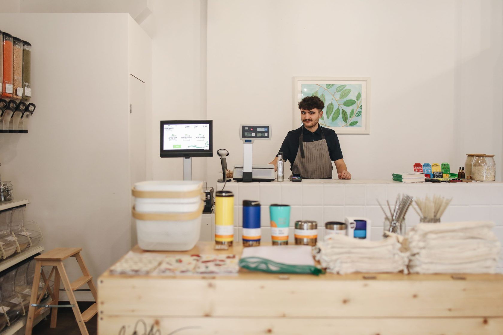

タイセイ｜店の発送通知
ゆとう たいせい ／ Taisei Yuto — Shopifyアプリの個人開発者（屋号：スノーボール）
発送のあとの連絡までが、
店の仕事。
Shopify店舗から購入者への連絡まわりで、店側が困っていることを記録しています。とくに発送通知。発送したあとの「いつ届く？」「日時を変えたい」への対応が、店舗でどれくらい手間になっているのかを知りたくて、店舗運営の方に話を聞いています。アプリはまだ作っていません。まず聞くところから始めます。
Photo: Polina Tankilevitch / Pexels
発送後に購入者へ届く案内文と追跡ページは、公開されている範囲で自分でも確認しています。店側が「伝わっているはず」と思っている案内が、購入者にどう見えているかのズレを集めています。
「いつ届く？」「日時を変えたい」という問い合わせや再配達への対応が、店側でどれくらい発生し、どれくらい手間になっているか。件数と分母のある形で聞いています。
LINEで発送を知らせ、その通知から配達日時の変更リンクへ進める仕組みを構想しています。再配達を減らすための一案で、作るかどうかはインタビューの結果で決めます。同じ連絡の土台は、再入荷通知やレビュー依頼にも広げられます。
聞いた内容は、店舗が特定されない形でのみ残します。個別の相談内容を外に出すことはしません。
「困っている店が多い」ではなく「聞いた◯店中◯店」の形で書きます。印象ではなく事実を残すためです。
進捗として公開するのは、聞いた店舗数と、仮説がどう変わったか。コードや機能の自慢はしません。
インタビューは聞くためのものです。その場で何かを売ることはしませんし、断ってもらって構いません。

自社で梱包・発送しているShopify店舗の運営者の方に、発送まわりの困りごとを聞かせてください。通話はしません。DMやメールで質問をお送りするので、お時間のあるときに答えていただく形です。
発送後の問い合わせの内容と件数、再配達への対応、購入者への連絡に使っている手段など、発送まわりの日常業務についてです。答えにくい質問は飛ばしてもらって構いません。
ありません。アプリはまだ作っておらず、聞くこと自体が目的です。お礼のベータ利用も、希望される方だけにお渡しします。
店名や個人が分かる形では公開しません。残すのは「◯店中◯店が〜」のような、数字と事実だけです。
Shopify店舗から購入者への連絡まわりで、店側が困っていることを記録しています。とくに発送通知。店舗運営の方に、DMやメールで質問に答えていただく形（目安15分）で話を聞いています。売り込みはしません。
自己紹介です。Shopify店舗の発送通知まわりを調べています。発送したあとの「いつ届く？」「日時を変えたい」への対応が、店側でどれくらい手間になっているかを知りたくて、店舗の方に話を聞いています。やりとりはDMやメールで、質問に答えていただく形（目安15分）です。アプリはまだ作っていません。聞いた内容は店名を出さず、数字と事実だけをここに残します。自社で梱包・発送している店舗の方、よければ話を聞かせてください。
| 名前 | 湯藤帝成（ゆとう たいせい）／ Taisei Yuto |
|---|---|
| 表示名 | タイセイ｜店の発送通知 |
| 屋号 | スノーボール |
| 拠点 | 兵庫県西宮市 |
| 活動 | Shopifyアプリの個人開発（検証フェーズ） |
| X | @taisei_ec_dev |